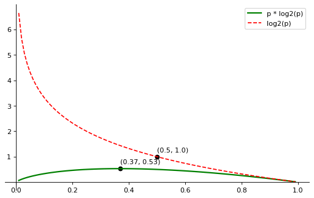
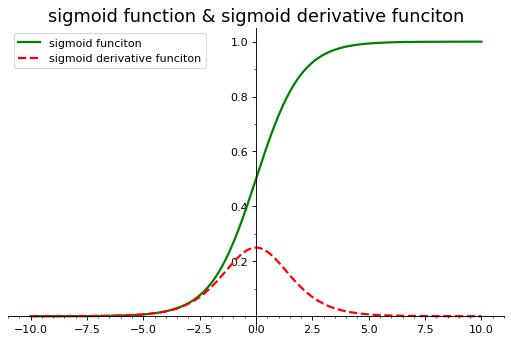
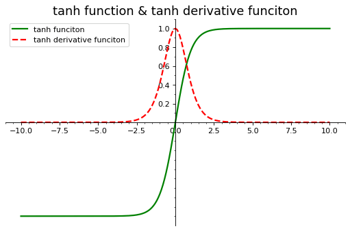
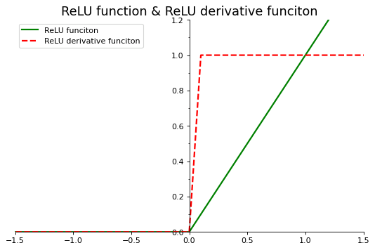
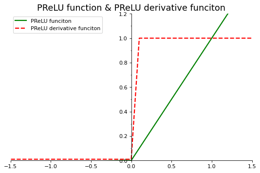
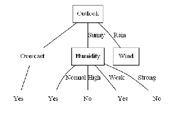

正文
11 熵与激活函数
11.1 熵和信息熵
11.1 熵的概念
【毕导】你会点进这个视频，并一脸懵逼地出去，而这一切已被物理规律注定了
简单认识熵，一看就会的那种
11.2 信息熵的概念
如何理解信息熵
科学证明中文就是最最最高级的！【硬核科普】信息熵是什么
中文是最有效率的语言吗？-- 信息熵简谈
如果 对一条信息越难预测→ \to → → \to →
H ( P 1 , P 2 , . . . , P n ) = − λ Σ i = 1 n P i log ( P i ) \color{Purple}{H(P _ 1, P _ 2,..., P _ n)} = - \lambda\color{Green}{\Sigma^n _ {i=1}}\color{Blue}{P _ i} \color{Red}{\log(P _ i)} H ( P 1 , P 2 , . . . , P n ) = − λ Σ i = 1 n P i log ( P i )
信息熵 等于对单个符号对应的信息量(不确定性) , 乘以它出现的概率 , 再求和 (单个符号不确定性的平均值)
11.1.3 应用 Python 函数库计算信息熵
(1) 均匀分布事件的不确定性计算和信息熵计算
1 2 3 4 5 6 7 8 9 10 11 12 13 14 15 16 17 18 19 20 21 22 23 24 25 26 27 28 29 30 31 32 33 34 35 import numpy as npimport matplotlib.pyplot as plt8 , 5 ), dpi=80 )111 )'right' ].set_color('none' ) 'top' ].set_color('none' )'bottom' )'bottom' ].set_position(('data' , 0 ))'left' )'left' ].set_position(('data' , 0 ))1 , 2 , 3 , 4 , 5 , 6 ])0 , 1 , 101 , endpoint=True )1 :100 ]print (X)1 * X * np.log2(X)print ("概率值为{}时信息熵分量(单个符号的不确定性)达到最大值{}" .format (X[np.argmax(Y)], np.max (Y)))"green" , linewidth=2 , label="p * log2(p)" )max (Y), color="black" )max (Y) + 0.2 , "({}, {})" .format (X[np.argmax(Y)], np.round (np.max (Y), 2 )))1 * np.log2(X)"red" , linestyle="dashed" , label="log2(p)" )0.5 , 1 , color="black" )0.5 , 1.2 , "(0.5, 1.0)" )
[0.01 0.02 0.03 0.04 0.05 0.06 0.07 0.08 0.09 0.1 0.11 0.12 0.13 0.14
0.15 0.16 0.17 0.18 0.19 0.2 0.21 0.22 0.23 0.24 0.25 0.26 0.27 0.28
0.29 0.3 0.31 0.32 0.33 0.34 0.35 0.36 0.37 0.38 0.39 0.4 0.41 0.42
0.43 0.44 0.45 0.46 0.47 0.48 0.49 0.5 0.51 0.52 0.53 0.54 0.55 0.56
0.57 0.58 0.59 0.6 0.61 0.62 0.63 0.64 0.65 0.66 0.67 0.68 0.69 0.7
0.71 0.72 0.73 0.74 0.75 0.76 0.77 0.78 0.79 0.8 0.81 0.82 0.83 0.84
0.85 0.86 0.87 0.88 0.89 0.9 0.91 0.92 0.93 0.94 0.95 0.96 0.97 0.98
0.99]
概率值为 0.37 时信息熵分量(单个符号的不确定性)达到最大值 0.5307290449339367

f ( x ) = x l o g 2 ( x ) f(x)=xlog2(x) f ( x ) = x l o g 2 ( x )
f ′ ( x ) = l n x + 1 l n 2 f'(x)=\frac{lnx+1}{ln2} f ′ ( x ) = l n 2 l n x + 1
f ′ ( x ) = 0 → x = 1 e ≈ 0 . 3 7 f'(x)=0\to x=\frac{1}{e}\approx 0.37 f ′ ( x ) = 0 → x = e 1 ≈ 0 . 3 7
(选择到某一个事件的)概率不断增加时, 事情的状态越来越确定, 不确定性越来越小, (单个符号不确定性的平均值)信息熵也越来越小
对于两个状态的均匀分布(两种状态对应的概率都为 0.5, 如抛硬币), 信息熵为 1
当概率变为 1 时, 事情已经完全确定, 结果不会有任何变化, 此时信息熵变为 0
熵可以应用到分类任务中, 熵值越低分类效果越好
熵可以衡量两个指标对结果的影响大小, 熵值越小的指标对结果的影响更大
(2) 均匀分布的信息熵和非均匀分布的信息熵
对同一个随机事件, 均匀分布时的信息熵是最大的
1 2 3 4 5 6 7 8 9 10 11 12 import numpy as np42 )200 ,size=10 )sum (x)print ("非均匀分布的概率分布:" , x)print ("非均匀分布对应的信息熵:" , np.sum (-1 * x * np.log2(x)))print ("均匀分布的信息熵:" , -1 * np.log2(1 / len (x)))
非均匀分布的概率分布: [0.01567749 0.02239642 0.07950728 0.10302352 0.11422172 0.11870101
0.13549832 0.20044793 0.21052632]
非均匀分布对应的信息熵: 2.8962045966225145
均匀分布的信息熵: 3.1699250014423126
11.2 激活函数
11.2 激活函数的概念
每一个神经元有一个激活函数, 作用于本神经元的输入, 产生输出如下:
f ( x ) = f ( Σ i ω i x i + b ) f(x)=f(\Sigma _ i \omega _ i x _ i + b) f ( x ) = f ( Σ i ω i x i + b )
如果没有激活函数或激活函数是线性的, 即f ( x ) = x f(x)=x f ( x ) = x
使用非线性激活函数, 可以将线性作用变成非线性作用, 以获得描述复杂的表单数据, 具有学习复杂事务的能力
11.2.2 常见的几种激活函数
Sigmoid 函数
f ( x ) = 1 1 + e − x f(x)=\frac{1}{1+e^{-x}} f ( x ) = 1 + e − x 1
f ′ ( x ) = f ( x ) [ 1 − f ( x ) ] = 1 e x ( 1 e x + 1 ) 2 f'(x)=f(x)\left[ 1-f(x) \right]=\frac{1}{e^x(\frac{1}{e^x}+1)^2} f ′ ( x ) = f ( x ) [ 1 − f ( x ) ] = e x ( e x 1 + 1 ) 2 1
1 2 3 4 5 6 7 8 9 10 11 12 13 14 15 16 17 18 19 20 21 22 23 24 25 26 27 28 29 30 31 32 33 34 35 36 37 38 import numpy as npimport matplotlib.pyplot as pltfrom matplotlib.ticker import MultipleLocator, FormatStrFormatterdef sigmoid (x ):return 1 / (1 + np.exp(-x))def sigmoid_derivative (x ):return sigmoid(x) * (1 - sigmoid(x))8 , 5 ), dpi=80 )111 )'right' ].set_color('none' )'top' ].set_color('none' )'bottom' )'bottom' ].set_position(('data' , 0 ))'left' )'left' ].set_position(('data' , 0 ))0.2 , 0.4 , 0.6 , 0.8 , 1.0 ])0.5 ))0.1 ))10 , 10 , 201 , endpoint=True )print ("X: " , X)"green" , linewidth=2 , label="sigmoid funciton" )"red" , linewidth=2 , linestyle="dashed" , label="sigmoid derivative funciton" )"sigmoid function & sigmoid derivative funciton" , fontsize=16 )
X: [-10. -9.9 -9.8 -9.7 -9.6 -9.5 -9.4 -9.3 -9.2 -9.1 -9. -8.9
-8.8 -8.7 -8.6 -8.5 -8.4 -8.3 -8.2 -8.1 -8. -7.9 -7.8 -7.7
-7.6 -7.5 -7.4 -7.3 -7.2 -7.1 -7. -6.9 -6.8 -6.7 -6.6 -6.5
-6.4 -6.3 -6.2 -6.1 -6. -5.9 -5.8 -5.7 -5.6 -5.5 -5.4 -5.3
-5.2 -5.1 -5. -4.9 -4.8 -4.7 -4.6 -4.5 -4.4 -4.3 -4.2 -4.1
-4. -3.9 -3.8 -3.7 -3.6 -3.5 -3.4 -3.3 -3.2 -3.1 -3. -2.9
-2.8 -2.7 -2.6 -2.5 -2.4 -2.3 -2.2 -2.1 -2. -1.9 -1.8 -1.7
-1.6 -1.5 -1.4 -1.3 -1.2 -1.1 -1. -0.9 -0.8 -0.7 -0.6 -0.5
-0.4 -0.3 -0.2 -0.1 0. 0.1 0.2 0.3 0.4 0.5 0.6 0.7
0.8 0.9 1. 1.1 1.2 1.3 1.4 1.5 1.6 1.7 1.8 1.9
2. 2.1 2.2 2.3 2.4 2.5 2.6 2.7 2.8 2.9 3. 3.1
3.2 3.3 3.4 3.5 3.6 3.7 3.8 3.9 4. 4.1 4.2 4.3
4.4 4.5 4.6 4.7 4.8 4.9 5. 5.1 5.2 5.3 5.4 5.5
5.6 5.7 5.8 5.9 6. 6.1 6.2 6.3 6.4 6.5 6.6 6.7
6.8 6.9 7. 7.1 7.2 7.3 7.4 7.5 7.6 7.7 7.8 7.9
8. 8.1 8.2 8.3 8.4 8.5 8.6 8.7 8.8 8.9 9. 9.1
9.2 9.3 9.4 9.5 9.6 9.7 9.8 9.9 10. ]

能够把输入的连续实值压缩到[0, 1]区间上有助于输出值的收敛
会出现梯度消失情况, lim x → ∞ f ′ ( x ) = 0 \lim _ {x\to \infty}f'(x) = 0 lim x → ∞ f ′ ( x ) = 0
非原点中心对称, 不利于下层的计算(可以直接-0.5?)
含有幂运算, 相对耗时较长
tanh 函数
f ( x ) = e x − e − x e x + e − x f(x)=\frac{e^x - e^{-x}}{e^x + e^{-x}} f ( x ) = e x + e − x e x − e − x
f ′ ( x ) = 1 − tanh 2 x f'(x) = 1 - \tanh^2x f ′ ( x ) = 1 − tanh 2 x
1 2 3 4 5 6 7 8 9 10 11 12 13 14 15 16 17 18 19 20 21 22 23 24 25 26 27 28 29 30 31 32 33 34 35 36 37 import numpy as npimport matplotlib.pyplot as pltfrom matplotlib.ticker import MultipleLocator, FormatStrFormatterdef tanh (x ):return (np.exp(x) - np.exp(-x)) / (np.exp(x) + np.exp(-x))def tanh_derivative (x ):return 1 - tanh(x) * tanh(x)8 , 5 ), dpi=80 )111 )'right' ].set_color('none' )'top' ].set_color('none' )'bottom' )'bottom' ].set_position(('data' , 0 ))'left' )'left' ].set_position(('data' , 0 ))0.2 , 0.4 , 0.6 , 0.8 , 1.0 ])0.5 ))0.1 ))10 , 10 , 201 , endpoint=True )print ("X: " , X)"green" , linewidth=2 , label="tanh funciton" )"red" , linewidth=2 , linestyle="dashed" , label="tanh derivative funciton" )"tanh function & tanh derivative funciton" , fontsize=16 )
X: [-10. -9.9 -9.8 -9.7 -9.6 -9.5 -9.4 -9.3 -9.2 -9.1 -9. -8.9
-8.8 -8.7 -8.6 -8.5 -8.4 -8.3 -8.2 -8.1 -8. -7.9 -7.8 -7.7
-7.6 -7.5 -7.4 -7.3 -7.2 -7.1 -7. -6.9 -6.8 -6.7 -6.6 -6.5
-6.4 -6.3 -6.2 -6.1 -6. -5.9 -5.8 -5.7 -5.6 -5.5 -5.4 -5.3
-5.2 -5.1 -5. -4.9 -4.8 -4.7 -4.6 -4.5 -4.4 -4.3 -4.2 -4.1
-4. -3.9 -3.8 -3.7 -3.6 -3.5 -3.4 -3.3 -3.2 -3.1 -3. -2.9
-2.8 -2.7 -2.6 -2.5 -2.4 -2.3 -2.2 -2.1 -2. -1.9 -1.8 -1.7
-1.6 -1.5 -1.4 -1.3 -1.2 -1.1 -1. -0.9 -0.8 -0.7 -0.6 -0.5
-0.4 -0.3 -0.2 -0.1 0. 0.1 0.2 0.3 0.4 0.5 0.6 0.7
0.8 0.9 1. 1.1 1.2 1.3 1.4 1.5 1.6 1.7 1.8 1.9
2. 2.1 2.2 2.3 2.4 2.5 2.6 2.7 2.8 2.9 3. 3.1
3.2 3.3 3.4 3.5 3.6 3.7 3.8 3.9 4. 4.1 4.2 4.3
4.4 4.5 4.6 4.7 4.8 4.9 5. 5.1 5.2 5.3 5.4 5.5
5.6 5.7 5.8 5.9 6. 6.1 6.2 6.3 6.4 6.5 6.6 6.7
6.8 6.9 7. 7.1 7.2 7.3 7.4 7.5 7.6 7.7 7.8 7.9
8. 8.1 8.2 8.3 8.4 8.5 8.6 8.7 8.8 8.9 9. 9.1
9.2 9.3 9.4 9.5 9.6 9.7 9.8 9.9 10. ]

关于原点中心对称, 收敛较好
存在梯度消失问题
含有幂运算, 相对耗时
ReLU 函数
f ( x ) = m a x ( 0 , x ) f(x) = max(0, x) f ( x ) = m a x ( 0 , x )
f ′ ( x ) = { 1 , x > 0 0 , x ≤ 0 f'(x) = \left\{\begin{matrix}
1,x>0
\\ 0,x\le0
\end{matrix}\right. f ′ ( x ) = { 1 , x > 0 0 , x ≤ 0
1 2 3 4 5 6 7 8 9 10 11 12 13 14 15 16 17 18 19 20 21 22 23 24 25 26 27 28 29 30 31 32 33 34 35 36 37 38 39 import numpy as npimport matplotlib.pyplot as pltfrom matplotlib.ticker import MultipleLocator, FormatStrFormatterdef relu (x ):return np.where(x <= 0 , 0 , x)def relu_derivative (x ):return np.where(x <= 0 , 0 , 1 )8 , 5 ), dpi=80 )1.5 , 1.5 )0 , 1 )111 )'right' ].set_color('none' )'top' ].set_color('none' )'bottom' )'bottom' ].set_position(('data' , 0 ))'left' )'left' ].set_position(('data' , 0 ))0 , 1.4 , 0.2 ))0.5 ))0.1 ))10 , 10 , 201 , endpoint=True )print ("X: " , X)"green" , linewidth=2 , label="ReLU funciton" )"red" , linewidth=2 , linestyle="dashed" , label="ReLU derivative funciton" )"ReLU function & ReLU derivative funciton" , fontsize=16 )
X: [-10. -9.9 -9.8 -9.7 -9.6 -9.5 -9.4 -9.3 -9.2 -9.1 -9. -8.9
-8.8 -8.7 -8.6 -8.5 -8.4 -8.3 -8.2 -8.1 -8. -7.9 -7.8 -7.7
-7.6 -7.5 -7.4 -7.3 -7.2 -7.1 -7. -6.9 -6.8 -6.7 -6.6 -6.5
-6.4 -6.3 -6.2 -6.1 -6. -5.9 -5.8 -5.7 -5.6 -5.5 -5.4 -5.3
-5.2 -5.1 -5. -4.9 -4.8 -4.7 -4.6 -4.5 -4.4 -4.3 -4.2 -4.1
-4. -3.9 -3.8 -3.7 -3.6 -3.5 -3.4 -3.3 -3.2 -3.1 -3. -2.9
-2.8 -2.7 -2.6 -2.5 -2.4 -2.3 -2.2 -2.1 -2. -1.9 -1.8 -1.7
-1.6 -1.5 -1.4 -1.3 -1.2 -1.1 -1. -0.9 -0.8 -0.7 -0.6 -0.5
-0.4 -0.3 -0.2 -0.1 0. 0.1 0.2 0.3 0.4 0.5 0.6 0.7
0.8 0.9 1. 1.1 1.2 1.3 1.4 1.5 1.6 1.7 1.8 1.9
2. 2.1 2.2 2.3 2.4 2.5 2.6 2.7 2.8 2.9 3. 3.1
3.2 3.3 3.4 3.5 3.6 3.7 3.8 3.9 4. 4.1 4.2 4.3
4.4 4.5 4.6 4.7 4.8 4.9 5. 5.1 5.2 5.3 5.4 5.5
5.6 5.7 5.8 5.9 6. 6.1 6.2 6.3 6.4 6.5 6.6 6.7
6.8 6.9 7. 7.1 7.2 7.3 7.4 7.5 7.6 7.7 7.8 7.9
8. 8.1 8.2 8.3 8.4 8.5 8.6 8.7 8.8 8.9 9. 9.1
9.2 9.3 9.4 9.5 9.6 9.7 9.8 9.9 10. ]

Leaky ReLU (PReLU)
f ( x ) = m a x ( α x , x ) f(x)=max(\alpha x, x) f ( x ) = m a x ( α x , x ) α \alpha α
f ( x ) = m a x ( 0 . 0 1 x , x ) f(x)=max(0.01x, x) f ( x ) = m a x ( 0 . 0 1 x , x )
f ( x ) = { 1 , x > 0 0 . 0 1 , x ≤ 0 f(x)=\left\{\begin{matrix}
1,x>0
\\ 0.01,x\le0
\end{matrix}\right. f ( x ) = { 1 , x > 0 0 . 0 1 , x ≤ 0
1 2 3 4 5 6 7 8 9 10 11 12 13 14 15 16 17 18 19 20 21 22 23 24 25 26 27 28 29 30 31 32 33 34 35 36 37 38 39 import numpy as npimport matplotlib.pyplot as pltfrom matplotlib.ticker import MultipleLocator, FormatStrFormatterdef prelu (x ):return np.where(x <= 0 , 0.01 * x, x)def prelu_derivative (x ):return np.where(x <= 0 , 0.01 , 1 )8 , 5 ), dpi=80 )1.5 , 1.5 )0 , 1 )111 )'right' ].set_color('none' )'top' ].set_color('none' )'bottom' )'bottom' ].set_position(('data' , 0 ))'left' )'left' ].set_position(('data' , 0 ))0 , 1.4 , 0.2 ))0.5 ))0.1 ))10 , 10 , 201 , endpoint=True )print ("X: " , X)"green" , linewidth=2 , label="PReLU funciton" )"red" , linewidth=2 , linestyle="dashed" , label="PReLU derivative funciton" )"PReLU function & PReLU derivative funciton" , fontsize=16 )
X: [-10. -9.9 -9.8 -9.7 -9.6 -9.5 -9.4 -9.3 -9.2 -9.1 -9. -8.9
-8.8 -8.7 -8.6 -8.5 -8.4 -8.3 -8.2 -8.1 -8. -7.9 -7.8 -7.7
-7.6 -7.5 -7.4 -7.3 -7.2 -7.1 -7. -6.9 -6.8 -6.7 -6.6 -6.5
-6.4 -6.3 -6.2 -6.1 -6. -5.9 -5.8 -5.7 -5.6 -5.5 -5.4 -5.3
-5.2 -5.1 -5. -4.9 -4.8 -4.7 -4.6 -4.5 -4.4 -4.3 -4.2 -4.1
-4. -3.9 -3.8 -3.7 -3.6 -3.5 -3.4 -3.3 -3.2 -3.1 -3. -2.9
-2.8 -2.7 -2.6 -2.5 -2.4 -2.3 -2.2 -2.1 -2. -1.9 -1.8 -1.7
-1.6 -1.5 -1.4 -1.3 -1.2 -1.1 -1. -0.9 -0.8 -0.7 -0.6 -0.5
-0.4 -0.3 -0.2 -0.1 0. 0.1 0.2 0.3 0.4 0.5 0.6 0.7
0.8 0.9 1. 1.1 1.2 1.3 1.4 1.5 1.6 1.7 1.8 1.9
2. 2.1 2.2 2.3 2.4 2.5 2.6 2.7 2.8 2.9 3. 3.1
3.2 3.3 3.4 3.5 3.6 3.7 3.8 3.9 4. 4.1 4.2 4.3
4.4 4.5 4.6 4.7 4.8 4.9 5. 5.1 5.2 5.3 5.4 5.5
5.6 5.7 5.8 5.9 6. 6.1 6.2 6.3 6.4 6.5 6.6 6.7
6.8 6.9 7. 7.1 7.2 7.3 7.4 7.5 7.6 7.7 7.8 7.9
8. 8.1 8.2 8.3 8.4 8.5 8.6 8.7 8.8 8.9 9. 9.1
9.2 9.3 9.4 9.5 9.6 9.7 9.8 9.9 10. ]

11.3 综合案例——分类算法中信息熵的应用
用 ID3 分类算法, 按照信息熵的减少幅度来确定分类的方向
1 2 3 4 5 6 7 8 9 10 11 12 13 14 15 16 17 18 19 20 21 import pandas as pdimport numpy as np"Sunny" , "Hot" , "High" , "Weak" , "No" ])]"Sunny" , "Hot" , "High" , "Strong" , "No" ]))"Overcast" , "Hot" , "High" , "Weak" , "Yes" ]))"Rain" , "Mild" , "High" , "Weak" , "Yes" ]))"Rain" , "Cool" , "Normal" , "Weak" , "Yes" ]))"Rain" , "Cool" , "Normal" , "Strong" , "No" ]))"Overcast" , "Cool" , "Normal" , "Strong" , "Yes" ]))"Sunny" , "Mild" , "High" , "Weak" , "No" ]))"Sunny" , "Cool" , "Normal" , "Weak" , "Yes" ]))"Rain" , "Mild" , "Normal" , "Weak" , "Yes" ]))"Sunny" , "Mild" , "Normal" , "Strong" , "Yes" ]))"Overcast" , "Mild" , "High" , "Strong" , "Yes" ]))"Overcast" , "Hot" , "Normal" , "Weak" , "Yes" ]))"Rain" , "Mild" , "High" , "Strong" , "No" ]))"Outlook" , "Temp." , "Humidity" , "Wind" , "Decision" ], index=range (1 , 15 ))'Day'
Outlook
Temp.
Humidity
Wind
Decision
Day
1
Sunny
Hot
High
Weak
No
2
Sunny
Hot
High
Strong
No
3
Overcast
Hot
High
Weak
Yes
4
Rain
Mild
High
Weak
Yes
5
Rain
Cool
Normal
Weak
Yes
6
Rain
Cool
Normal
Strong
No
7
Overcast
Cool
Normal
Strong
Yes
8
Sunny
Mild
High
Weak
No
9
Sunny
Cool
Normal
Weak
Yes
10
Rain
Mild
Normal
Weak
Yes
11
Sunny
Mild
Normal
Strong
Yes
12
Overcast
Mild
High
Strong
Yes
13
Overcast
Hot
Normal
Weak
Yes
14
Rain
Mild
High
Strong
No
名称
解释
Day
日期
OutLook
阴晴
Temp.
气温
Humidity
湿度
Wind
风力
Decision
目标列/标识列
(1) 数据集的信息熵的计算
H ( D ) = − Σ k = 1 2 ∣ C k ∣ ∣ D ∣ log 2 C k ∣ D ∣ H(D)=-\Sigma^2 _ {k=1}\frac{|C _ k|}{|D|}\log _ 2 \frac{C _ k}{|D|} H ( D ) = − Σ k = 1 2 ∣ D ∣ ∣ C k ∣ log 2 ∣ D ∣ C k
= − ∣ C y e s ∣ ∣ D ∣ log 2 ∣ C y e s ∣ ∣ D ∣ − ∣ C n o ∣ ∣ D ∣ log 2 ∣ C n o ∣ ∣ D ∣ = - \frac{|C _ {yes}|}{|D|}\log _ 2\frac{|C _ {yes}|}{|D|} - \frac{|C _ {no}|}{|D|} \log _ 2\frac{|C _ {no}|}{|D|} = − ∣ D ∣ ∣ C y e s ∣ log 2 ∣ D ∣ ∣ C y e s ∣ − ∣ D ∣ ∣ C n o ∣ log 2 ∣ D ∣ ∣ C n o ∣
∣ D ∣ = 1 4 , ∣ C y e s ∣ = 9 , ∣ C n o ∣ = 5 |D|=14,|C _ {yes}|=9, |C _ {no}|=5 ∣ D ∣ = 1 4 , ∣ C y e s ∣ = 9 , ∣ C n o ∣ = 5
H ( D ) = − 9 1 4 log 2 9 1 4 − 5 1 4 log 2 5 1 4 = 0 . 9 4 0 H(D)=-\frac{9}{14}\log _ 2 \frac{9}{14} - \frac{5}{14}\log _ 2 \frac{5}{14}= 0.940 H ( D ) = − 1 4 9 log 2 1 4 9 − 1 4 5 log 2 1 4 5 = 0 . 9 4 0
1 2 3 4 5 D = len (df)len (df[df.Decision == "Yes" ])len (df[df.Decision == "No" ])
0.9402859586706311
(2) 对数据集进行分类之后的信息熵
按照某一属性 A:
H ( D ∣ A ) = Σ i = 1 n ∣ D i ∣ ∣ D ∣ H ( D i ) = − Σ i = 1 n ∣ D i ∣ ∣ D ∣ Σ k = 1 K ∣ C i k ∣ ∣ D i ∣ log 2 ∣ D i k ∣ ∣ D i ∣ H(D|A)=\Sigma^n _ {i=1}\frac{|D _ i|}{|D|}H(D _ i)=-\Sigma^n _ {i=1}\frac{|D _ i|}{|D|}\Sigma^K _ {k=1}\frac{|C _{ik}|}{|D _ i|}\log _2\frac{|D _{ik}|}{|D _ i|} H ( D ∣ A ) = Σ i = 1 n ∣ D ∣ ∣ D i ∣ H ( D i ) = − Σ i = 1 n ∣ D ∣ ∣ D i ∣ Σ k = 1 K ∣ D i ∣ ∣ C i k ∣ log 2 ∣ D i ∣ ∣ D i k ∣
针对某一属性 A, 分类后不确定性减少, 由此产生的信息增益:
g ( D ∣ A ) = H ( D ) − H ( D ∣ A ) g(D|A)=H(D)-H(D|A) g ( D ∣ A ) = H ( D ) − H ( D ∣ A )
属性 Wind 的信息熵:
H ( D ∣ W i n d ) = Σ i = 1 n ∣ D i ∣ ∣ D ∣ H ( D i ) = ∣ D s t r o n g ∣ ∣ D ∣ H ( D s t r o n g ) + ∣ D w e a k ∣ ∣ D ∣ H ( D w e a k ) H(D|Wind)=\Sigma^n _ {i=1}\frac{|D _ i|}{|D|}H(D _ i)=\frac{|D _ {strong}|}{|D|}H(D _ {strong}) + \frac{|D _ {weak}|}{|D|}H(D _ {weak}) H ( D ∣ W i n d ) = Σ i = 1 n ∣ D ∣ ∣ D i ∣ H ( D i ) = ∣ D ∣ ∣ D s t r o n g ∣ H ( D s t r o n g ) + ∣ D ∣ ∣ D w e a k ∣ H ( D w e a k )
对于 Wind=Strong 的数据集的信息熵:
H ( D s t r o n g ) = Σ k = 1 2 ∣ C s t r o n g , k ∣ ∣ D s t r o n g ∣ log 2 ∣ C s t r o n g , k ∣ ∣ D s t r o n g ∣ H(D _ {strong})=\Sigma^2 _ {k=1}\frac{|C _ {strong,k}|}{|D _ {strong}|}\log _ 2\frac{|C _ {strong,k}|}{|D _ {strong}|} H ( D s t r o n g ) = Σ k = 1 2 ∣ D s t r o n g ∣ ∣ C s t r o n g , k ∣ log 2 ∣ D s t r o n g ∣ ∣ C s t r o n g , k ∣
= − ∣ C s t r o n g , y e s ∣ ∣ D s t r o n g ∣ log 2 ∣ C s t r o n g , y e s ∣ ∣ D s t r o n g ∣ − ∣ C s t r o n g , n o ∣ ∣ D s t r o n g ∣ log 2 ∣ C s t r o n g , n o ∣ ∣ D s t r o n g ∣ =-\frac{|C _ {strong,yes}|}{|D _ {strong}|}\log _ 2\frac{|C _ {strong,yes}|}{|D _ {strong}|}-\frac{|C _ {strong,no}|}{|D _ {strong}|}\log _ 2\frac{|C _ {strong,no}|}{|D _ {strong}|} = − ∣ D s t r o n g ∣ ∣ C s t r o n g , y e s ∣ log 2 ∣ D s t r o n g ∣ ∣ C s t r o n g , y e s ∣ − ∣ D s t r o n g ∣ ∣ C s t r o n g , n o ∣ log 2 ∣ D s t r o n g ∣ ∣ C s t r o n g , n o ∣
= − 3 6 log 2 3 6 − 3 6 log 2 3 6 = 1 =-\frac{3}{6}\log _ 2\frac{3}{6}-\frac{3}{6}\log _ 2\frac{3}{6}=1 = − 6 3 log 2 6 3 − 6 3 log 2 6 3 = 1
1 2 3 4 5 6 D_strong = len (df[df.Wind == "Strong" ])len (df[(df.Wind == "Strong" ) & (df.Decision == "Yes" )])len (df[(df.Wind == "Strong" ) & (df.Decision == "No" )])
1.0
1 2 3 4 5 6 D_weak = len (df[df.Wind == "Weak" ])len (df[(df.Wind == "Weak" ) & (df.Decision == "Yes" )])len (df[(df.Wind == "Weak" ) & (df.Decision == "No" )])
0.8112781244591328
1 2 H_D_Wind = D_strong / D * H_D_strong + D_weak / D * H_D_weak
0.8921589282623617
g ( D ∣ W i n d ) = H ( D ) − H ( D ∣ W i n d ) = 0 . 9 4 0 − 0 . 8 9 2 = 0 . 0 4 8 g(D|Wind)=H(D)-H(D|Wind)=0.940-0.892=0.048 g ( D ∣ W i n d ) = H ( D ) − H ( D ∣ W i n d ) = 0 . 9 4 0 − 0 . 8 9 2 = 0 . 0 4 8
0.04812703040826949
同理,
g ( D ∣ O u t l o o k ) = 0 . 2 4 6 g(D|Outlook)=0.246 g ( D ∣ O u t l o o k ) = 0 . 2 4 6
g ( D ∣ T e m p ) = 0 . 0 2 9 g(D|Temp)=0.029 g ( D ∣ T e m p ) = 0 . 0 2 9
g ( D ∣ H u m i d i t y ) = 0 . 1 5 1 g(D|Humidity)=0.151 g ( D ∣ H u m i d i t y ) = 0 . 1 5 1
ID3 算法是一种贪心算法，用来构造决策树。ID3 算法起源于概念学习系统（CLS），以信息熵的下降速度为选取测试属性的标准，即在每个节点选取还尚未被用来划分的具有最高信息增益的属性作为划分标准，然后继续这个过程，直到生成的决策树能完美分类训练样例。ID3 算法_百度百科
Collecting graphviz
Using cached graphviz-0.20-py3-none-any.whl (46 kB)
Installing collected packages: graphviz
Successfully installed graphviz-0.20
Note: you may need to restart the kernel to use updated packages.
1 2 3 4 5 6 7 8 9 10 11 12 13 14 15 16 17 18 19 20 21 22 23 24 25 26 27 28 29 30 31 32 33 34 35 36 37 from PIL import Imageimport matplotlib.pyplot as pltfrom graphviz import Digraph"test" , comment="the test" , format ="png" )'Outlook' , shape="record" , label='Outlook' )'Overcast' , shape="plaintext" , label='Overcast' )'Yes1' , shape="plaintext" , label='Yes' )'Humidity' , shape="record" , label='Humidity' )'Yes2' , shape="plaintext" , label='Yes' )'No1' , shape="plaintext" , label='No' )'Wind' , shape="record" , label='Wind' )'Yes3' , shape="plaintext" , label='Yes' )'No2' , shape="plaintext" , label='No' )'Outlook' , 'Humidity' , arrowhead="none" , label="Sunny" )'Humidity' , 'No1' , arrowhead="none" , label="High" )'Humidity' , 'Yes2' , arrowhead="none" , label="Normal" )'Outlook' , 'Overcast' , arrowhead="none" )'Overcast' , 'Yes1' , arrowhead="none" )'Outlook' , 'Wind' , arrowhead="none" , label="Rain" )'Humidity' , 'No2' , arrowhead="none" , label="Strong" )'Humidity' , 'Yes3' , arrowhead="none" , label="Weak" )'test' , view=False )open ("test.png" )'off' )

ID3 决策树分类算法的结果
不太会画, 先这样吧…